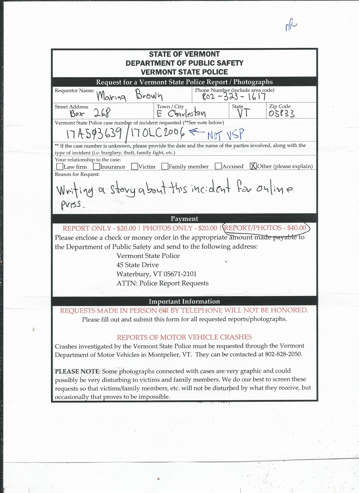
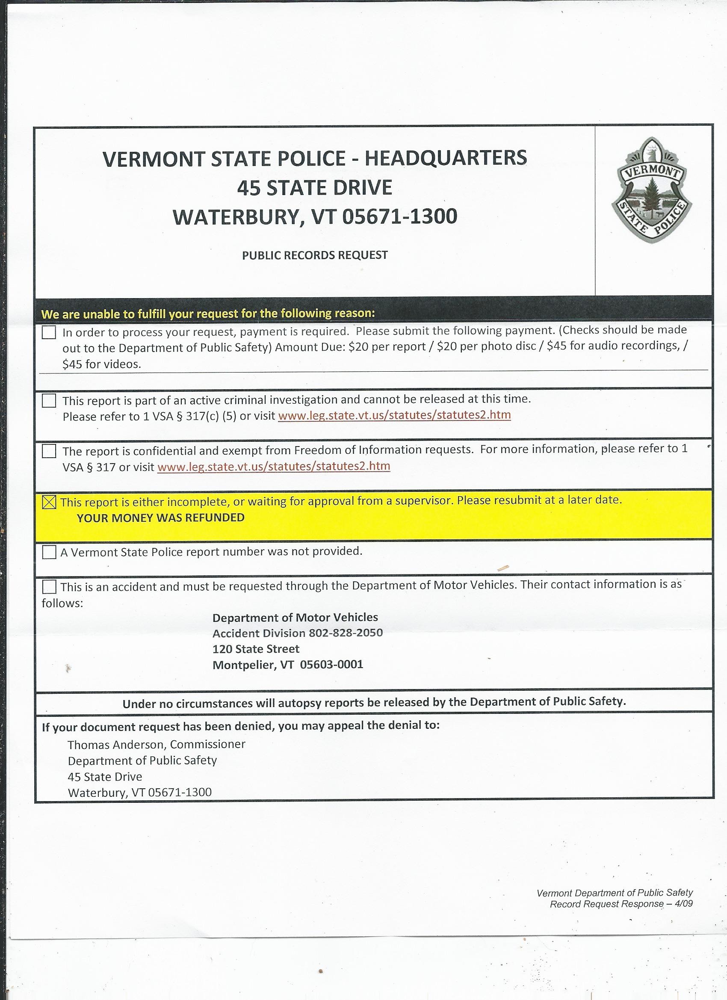
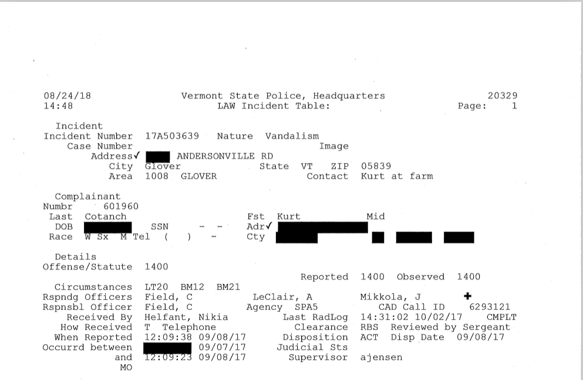
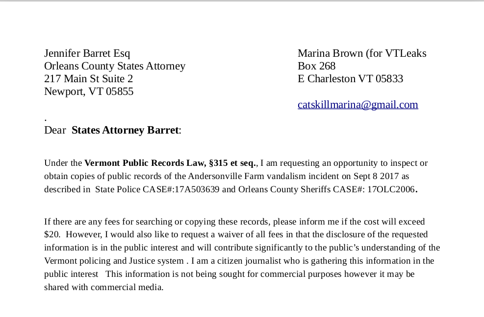
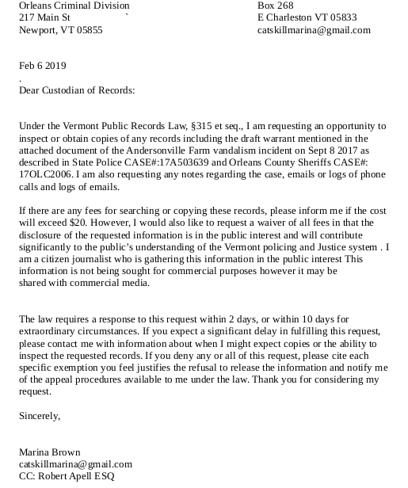

Story of a public records request - retrieving a police report
of a racist incident.
On Sept 7-8 2017 one or more vandals spray-painted vile racist graffiti on a barn in Glover VT and painted other vulger and threatening graffiti on mailboxes and on the road around the farm. A local family felt particularly threatened by the graffiti. I asked them if they wanted me to get the police report. They answered yes, so I agreed to try to obtain it. I expected it to be a quick process. I could not have been more wrong.
The first thing I did was to obtain the press release from the Vermont State
Police (VSP).
The VSP maintains an online archive of press releases about various incidents
at blogspot at the following URL, https://vtstatepolice.blogspot.com/ . It’s
curious that they do not maintain the site on state infrastructure and that
they only maintain press releases for 6 months. When queried about this
Adam Silverman, the Public Information Officer for the Vermont State Police,
wrote this:
"The use of Blogspot for VSP news releases predates my time with the agency,
but I believe it relates to the need for a certain level of automation that
Blogspot offers in terms of taking our emailed news releases and posting them
as entries on the blog. The six-month expiration, which also is an automated
process, is to provide transparency in our operations and regarding these
public records while not allowing the releases to exist on the site forever."
I replied with the following question:
"One more question - how does removing information help with
transparency ? It would seem to me that it would be more transparent
to maintain searchable archives of past press releases. I tend to
believe that removing data from public sources reduces transparency."
Mr Silverman responded:
"There is a balance to strike between providing public information online, and
allowing material to exist there forever. The records remain public under
Vermont law after they automatically expire from the website."
The initial press release is shown below carefully note the case number:
 I used the case number listed on the press release to query the VSP
and the FBI. As of this writing the FBI has yet to
respond although they indicated they have records responsive to my request.
They estimated my request would be completed by (----- DATE -----). My first
request to the VSP was sent early April 2018. The first
response was from the VSP and it was a statement that the the report was not
complete. The initual incident was in Sept of 2017 and my first request was in
April of 2018. It’s odd that the report was still “incomplete”. Below is the
initial request. Note that the VSP noted on the request that it was "not VSP".
I used the case number listed on the press release to query the VSP
and the FBI. As of this writing the FBI has yet to
respond although they indicated they have records responsive to my request.
They estimated my request would be completed by (----- DATE -----). My first
request to the VSP was sent early April 2018. The first
response was from the VSP and it was a statement that the the report was not
complete. The initual incident was in Sept of 2017 and my first request was in
April of 2018. It’s odd that the report was still “incomplete”. Below is the
initial request. Note that the VSP noted on the request that it was "not VSP".

Below is the official response:

After receiving this refusal i waited a couple weeks and re-sent the same
request. The response was the same. I then waited some time and resubmitted it.
The reply was the same so i contected the NLG and the ACLU to see what i could
do to finally get the public records. I sent and re-sent the same request 3
times. The usual civil rights lawyer i deal with
was busy with other things so he suggested i contact Robert Appel. He agreed to
a reduced rate for this case as he supports what i was working on.
After seeing my repeated requests my attorney contacted the Vermont State
Police on my behalf. His letter reiterated the fact that i had already
submitted 3 requests and the State Police's obligations under the public
records law to produce records if they were not protected under a number of
exemptions in the Public Records Law. The letter was sent on Aug 13 2018.
On On 8/17/2018 my lawyer recieved an message from Keri Bailey invoking the
10 day extention available under the VT Public records law stating that she
needed to confer with the Orleans County Sheriff and the Orleans County States
Attorney. I then sent out a public records request to the Orleans County
Sheriff and recieved a very quick reply that the Orleans County Sheriff
"did not take any reports reference this call. The Vermont State Police
handled this, Case# 17A503639."
On August 24 Mr Appel recieved a highly redacted report from the Vermont State
police. The report had so much digital black ink it was hard to make out
anything on the report.

Given that it seemed that much allowable public information was blacked out on
this report i immediately decided to appeal the redaction with the help of the
lawyer. Both the Lawyer and i found the heavy redaction to be odd. The appeal
that was sent to the Vermont State Police/Department of Public Safety was dated
Oct 26 2018. The response came from Commissioner Thomas D. Anderson. The Appeal
was denied in part and granted in part. The response from the Commissioner is
below:

This response was accompanied by a far less redacted document. It still has
a lot of black ink but it seems that this would be the best we could get without
filing a lawsuit. Sadly in Vermont the Public Records Law is only enforced by
private lawsuit. There is no ombudsman to push recalcitrant organizations to
produce documents. This is the final report with much of the redaction removed.

In writing this summary of this process i noticed that the Orleans County States
Attorney had not been queried with a Public Records Request on this matter so i
sent her a request. As of this writing i have yet to recieve a response from
the States Attorney and the request to the FBI is still awaiting a government
information specialist. The request to the States Attorney is below.

Orleans County States Attorney, Jennifer Barrett's office did not respond to
me. Instead James Pepper, the Records Officer for the Vermont Department of
States Attorneys and Sheriffs responded to me with the following pdf which
was attached to an email.

I then sent John Cambell an appeal.
Dear Mr Campbell:
I am appealing the denial by James Pepper of my public
records request regarding State Police Case 17A503639.
The denial, which is attached states that no case was opened
by States Attorney Barret but she reviewed a draft warrent
regarding the case.
I am requesting any notes regarding her review of said draft
warrant, records of communications or email logs of any emails
sent regarding this draft warrant. The above mentioned logs,
records and notes should have been considered records.
Thank you very much for your time.
--- Marina Brown (For VTLeaks)
On Jan 31 2019 I followed up with the Vermont State Police Regarding the
record as suggested by James Pepper of the Department of State's
Attorneys and Sherrifs.
Dear Mr Grier:
It seems that the draft warrant associated with State Police Case
#17A503639 may have been inadvertently left out. I have the full
police report.
When i queried Orleans County States Attorney Barrett regarding the
case i was told that i could retrieve the draft warrant from you. Their
response is attached.
Thanks for your time and effort.
--- Marina Brown (For VTLeaks)
I made the next public records request on Feb 6 2019. I requested any records
pertaining to the draft warrent that the Association of States Attorneys and
sheriffs mentioned when i queried them. I requested the records from the
Orleans County Criminal Division which is the court for which Judge Bent works
for. He was mentioned in the first police report i recieved from the Vermont
State police.

I later recieved the requested warrant from the Vermont State Police.

.
.
.
.
.
.
.
When asked for further comment Silverman wrote the
following.
(Comment/Did not comment)
Robert Appel added:
(Comment/Did not comment)
When queried, Orleans County States Attorney Jennifer Barret: (commented/or not)